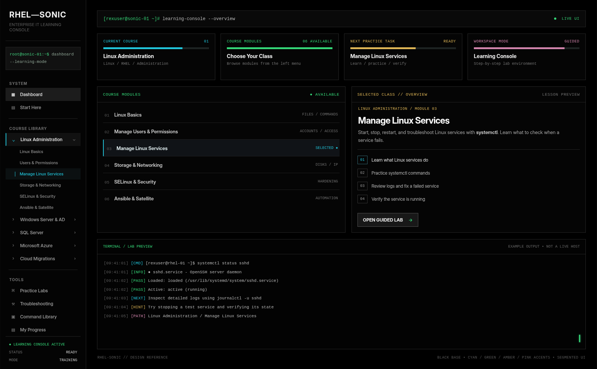
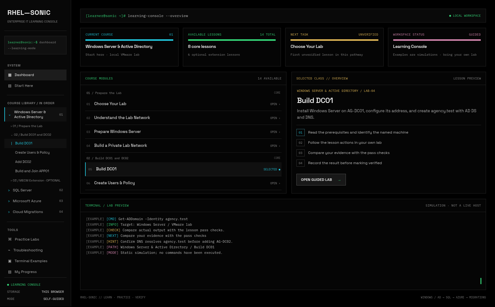

Supplied reference — controlling visual specification

Implemented dashboard — 1600 × 991 browser capture



Shared geometry: approximately 14.4% sidebar; command bar at y=28; metrics at y=90; two middle panels at y=232 with 394px height; terminal at y=643. All panels use thin charcoal borders and neutral near-black surfaces. Color rules identify information types, not completion percentages. Course content changes the labels and module list; Space Grotesk and IBM Plex Mono implement the requested typography.